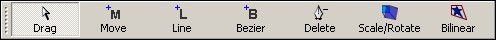

Drawing modes
The drawing modes determine how the canvas responds to your mouse gestures, in particular how left-clicks are handled. Each drawing mode is exclusive, meaning that at one time only one drawing mode may be active. To activate any drawing mode, use the drawing modes toolbar as shown below, or use the F1 - F7 shortcut keys.

Drag
In Drag drawing mode, you can drag any point of the shape to move its location. Dragging on empty area of canvas allows you to select multiple points so that you can drag a set of points in-sync. Note: when in any other drawing modes (except Scale/Rotate and Bilinear), holding the Shift key temporarily switch to Drag mode until you release the key.
Move
Move drawing mode is not for moving the shape around, but it is to add M commands, which tell the renderer to move to a specific coordinate, closing any path before it does that.
Line
Draw a straight line from the current point to a specific coordinate.
Bezier (curve)
Draw a Bezier curve from the current point to a specific coordinate. Once you release the left mouse button, the two control points will be generated, thus allowing you to shape the curve any way you want.
Delete
Remove a line or curve from the canvas by clicking on its point or any of its control points.
Scale/Rotate
Rescale and rotate the shape.
Bilinear (Transformation)
Distort the shape using bilinear transformation.
This help file has been generated by the freeware version of HelpNDoc